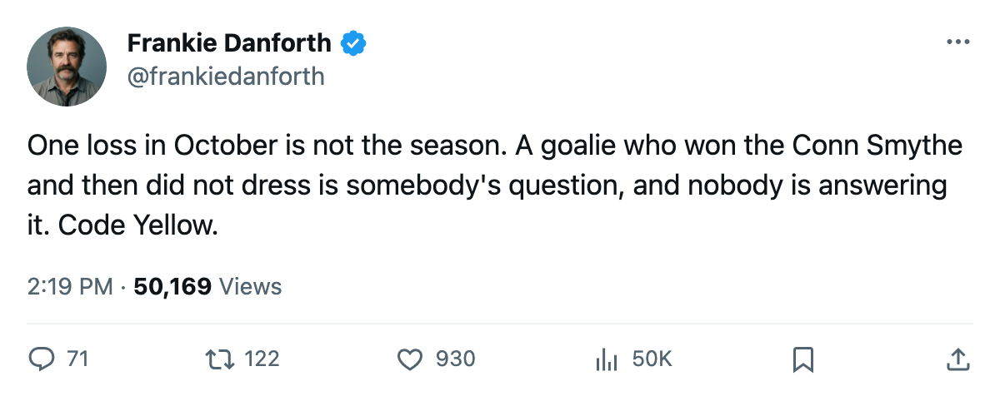
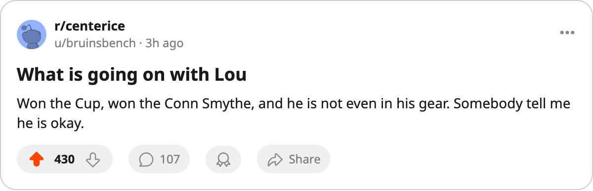

TOR
TORDANFORTH: Code Yellow, the miss I owe you, and a 19-year-old as my second centre
I called Toronto over Pittsburgh on Friday. It finished 3-1 the other way, and the Meter moves.
 Frankie DanforthColumnist · Queen City Telegram
Frankie DanforthColumnist · Queen City Telegram
Code Yellow
I wrote it down on Thursday: "Toronto defeats Pittsburgh on 2005-10-14." It finished 3-1 to the Penguins at the Air Canada Centre. That is a miss and it is mine.
So the Panic Meter moves off Green. One loss, 4 points from 3 games, 24 shots and 1 goal in front of the home crowd. Code Yellow.
The money is not scoring
The goals are coming from the cheap end of the payroll.  Stanislav Chistov87, 22, has 3 points at $5.00M.
Stanislav Chistov87, 22, has 3 points at $5.00M.  Rick Nash85, 21, has 3 points at $3.90M.
Rick Nash85, 21, has 3 points at $3.90M.  Barret Jackman86 is a defenceman at $0.70M with 3 assists and 28.3 minutes a night.
Barret Jackman86 is a defenceman at $0.70M with 3 assists and 28.3 minutes a night.
 Marian Gaborik99 makes $11.90M and has 1 goal in 2 games. He is 99 overall and up 11 on the Bureau's Development Index, which is the best form in the building, and it has bought Toronto one goal.
Marian Gaborik99 makes $11.90M and has 1 goal in 2 games. He is 99 overall and up 11 on the Bureau's Development Index, which is the best form in the building, and it has bought Toronto one goal.  Mats Sundin92 makes $8.40M and has 1 point in 3 games at 17.0 minutes.
Mats Sundin92 makes $8.40M and has 1 point in 3 games at 17.0 minutes.
I have said for a year that this club needed a centre behind Sundin. The centre behind Sundin is Petr Chlup87, 19 years old, 2 points, 20.0 minutes a night, and  Brad Richards87 is on the third line at $6.70M and 12.3 minutes. I am not going to pretend I mind.
Brad Richards87 is on the third line at $6.70M and 12.3 minutes. I am not going to pretend I mind.
The crease
 Roberto Luongo95 won the Conn Smythe and the Jennings, makes $1.60M with 1 year left, and did not dress Friday. Maxime Ouellet86 gave up 3 goals on 22 shots. Mikael Tellqvist73 dressed behind him and is down 5 on the Index, the coldest form in the room. No body part is on the injured list against Luongo. I will not guess at it. I will say the champions ran a man who did not dress, a man who gave up 3, and a man the Index has falling.
Roberto Luongo95 won the Conn Smythe and the Jennings, makes $1.60M with 1 year left, and did not dress Friday. Maxime Ouellet86 gave up 3 goals on 22 shots. Mikael Tellqvist73 dressed behind him and is down 5 on the Index, the coldest form in the room. No body part is on the injured list against Luongo. I will not guess at it. I will say the champions ran a man who did not dress, a man who gave up 3, and a man the Index has falling.
 Bryan McCabe84 won the Norris and watched a third straight game, and the six in front of Ouellet gave up 3 after conceding 1 in their first 2.
Bryan McCabe84 won the Norris and watched a third straight game, and the six in front of Ouellet gave up 3 after conceding 1 in their first 2.
Tonight the Garden. Monday Phoenix at home. Wednesday in Montreal.

